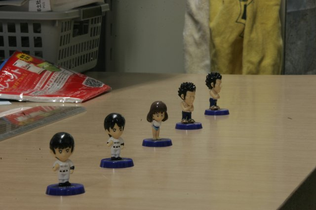
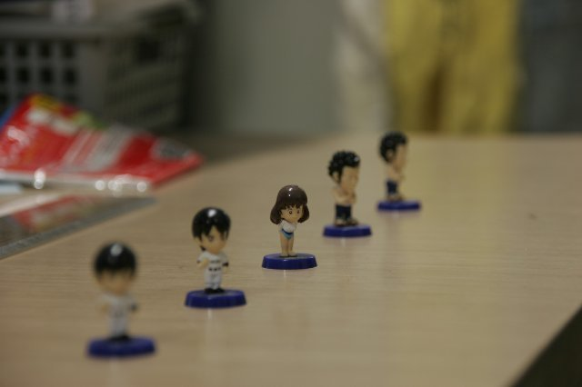

顕微鏡では同じ倍率で被写界深度をチェックするのは難しいので，カメラでの絵を見てください．
まずは，被写界深度が非常に深い場合の絵です．

人形すべてに焦点が合っているのがわかりますね．
この場合のレンズの絞り値は，
F=36
で，レンズは106mmのもの使っています．
さて，レンズをぐっと開放して，
F=5.6
まで変化させると，

と，ほとんど南ちゃんしか焦点が合わなくなります．
このように，あるターゲットにフォーカスをあわせ，ほかをぼかすことにより，ターゲットを強調させることができます．
逆に，すべての像に焦点を合わせたいときには，絞って（パンフォーカス），撮影します．
もちろん，その場合にはレンズに入ってくる光の量が少なくなってきてしまうので，撮影時間を長くする必要があります．
そうなると，動きのある物体が流れてしまうので注意が必要です．
その場合には，高感度のカメラを使うなどの対策が必要となります．
この人形は，学生がデスクに飾っていたものを借りました．